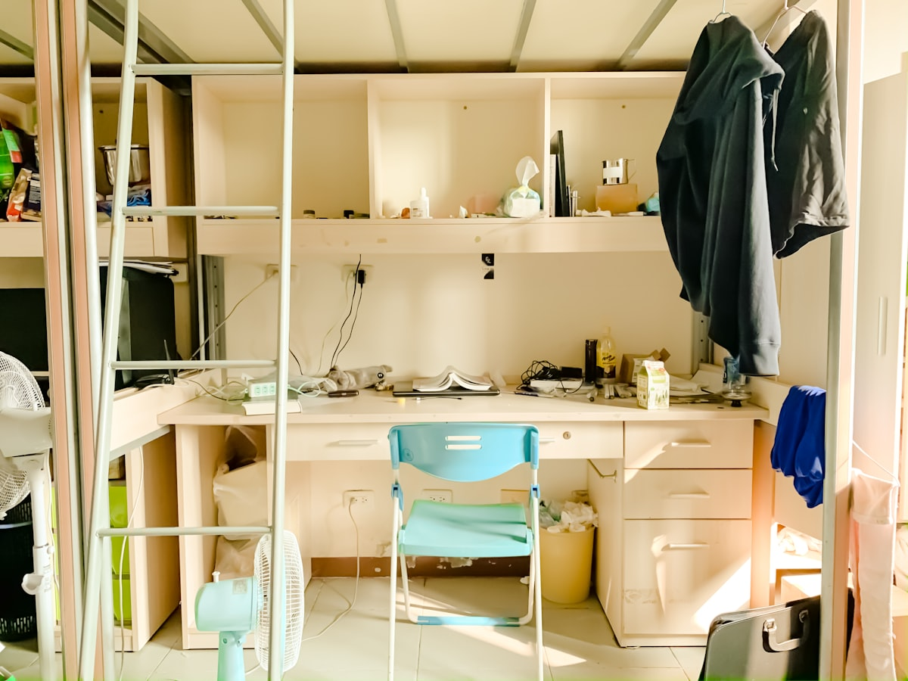
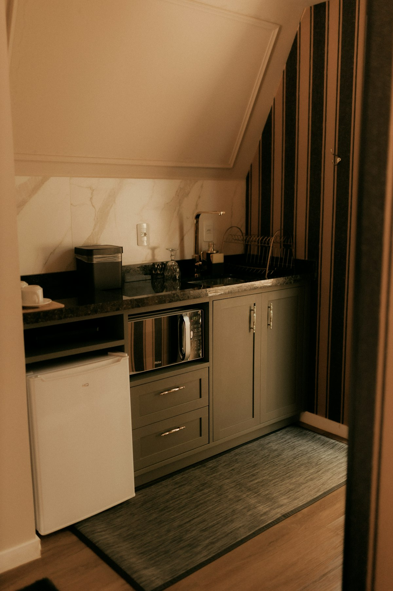
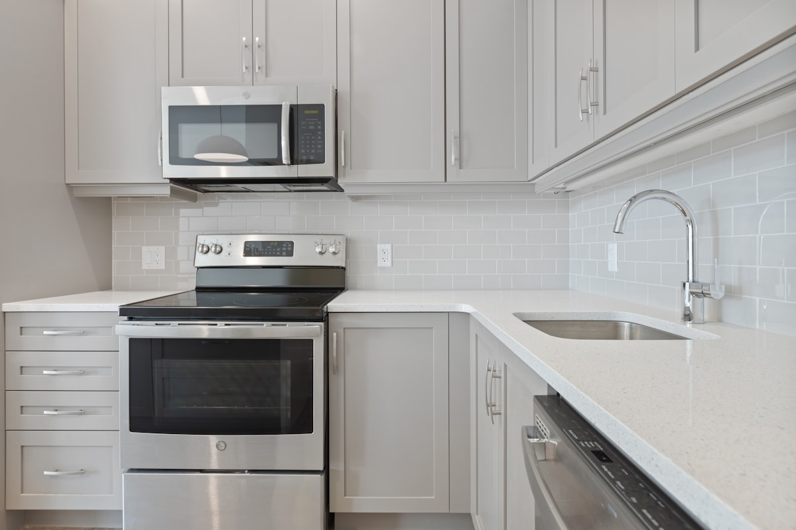

📰
✍️
Appliance Tips & Guides
Learn. Fix. Save.
Practical advice, buying guides, and maintenance tips from the Universal Appliances Repair team in Orange County.
Featured Post

Tips & Guides
5 Must-Have Appliances for Dorm Life (That Actually Fit in a Tiny Room)
College dorm life can be exciting — but let's face it, it's tight on space. When you're limited to a small room and even smaller outlets, every appliance has to pull its weight. Here are 5 compact, student-friendly gadgets that are functional, space-saving, and worth every penny.
Read Article →
All Articles

May 20, 2026
Wolf Range Igniter Not Working? 4 Causes and How to Fix It
The burner clicks but won't catch. Four causes from a dirty ceramic tip to a failed spark module, what you can check yourself, and what each repair costs in Orange County.
Read more →

May 18, 2026
Built-In Refrigerator Repair in Orange County: Sub-Zero, Thermador & Miele Guide
What makes built-in refrigerator repair different from freestanding, brand-by-brand failure patterns for Sub-Zero, Thermador, and Miele, and what repairs cost in OC homes.
Read more →

May 3, 2026
Whirlpool Dryer Repair in Los Alamitos, CA — Common Problems, Costs & What to Expect
If your Whirlpool dryer runs but stays cold, thumps, or takes all afternoon to finish one load, this guide breaks down the likely failure, the usual repair cost, and when fixing it still makes sense.
Read more →

May 3, 2026
Freezer Repair Cost in Rancho Santa Margarita, CA — What Homeowners Usually Pay
Retail pages do not help when your freezer is softening food. This local cost guide covers the common repair ranges in Rancho Santa Margarita and when replacement becomes the smarter call.
Read more →
May 2, 2026
Freezer Repair in Brea, CA — What to Check Before Food Thaws
Soft ice cream and warming meat usually point to a short list of failures. Learn what to check first, what common freezer repairs cost, and when it is time to call a technician in Brea.
Read more →

May 2, 2026
Wine Cooler Not Cooling in Seal Beach? 6 Common Causes
If your wine fridge runs all day but the bottles still feel warm, the issue is usually airflow, controls, or a small failed component. Here are the six most common reasons Seal Beach units lose cooling.
Read more →

Updated May 2026
Best Mini Fridges for Students: How to Choose the Right Refrigerator for College Life
Heading to college? One of the must-have dorm essentials is a compact refrigerator. With so many options out there, here's how to pick the right one for your needs and budget.
Read Article →
Updated May 2026
7 Refrigerator Maintenance Tips to Keep Your Fridge Running Longer
Your refrigerator works 24/7. With a little regular maintenance you can add years to its lifespan and avoid expensive repair calls. Here are seven tips every homeowner should know.
Read Article →

Updated May 2026
Repair or Replace? How to Decide What to Do With a Broken Appliance
When your stove stops working or your washer leaks, should you repair it or buy new? The answer depends on age, repair cost, and efficiency. Here's a simple guide to make the right call.
Read Article →
Updated May 2026
Dryer Repair in Orange County, CA — Common Problems & When to Call a Pro
Dryer not heating, won't start, or making strange noises? Learn what's behind the most common dryer failures in Orange County and whether repair or replacement makes more sense.
Read Article →

Updated May 2026
Dishwasher Not Draining? 6 Common Causes & Fixes (Anaheim Homeowner's Guide)
Standing water in your dishwasher after a cycle is almost always caused by one of six fixable issues. Learn which ones you can handle yourself and when to call a technician in Anaheim.
Read Article →

April 23, 2026
Washer Repair in Garden Grove, CA — Signs You Need a Pro
Leaking, not draining, banging through spin, or just dead? Learn what each washing machine symptom usually means and when it's time to call a technician in Garden Grove.
Read Article →

April 23, 2026
Microwave Not Heating in Costa Mesa? Here's Why
Turntable spins but food stays cold? Learn the most common causes of a microwave that runs without heating, what's safe to check yourself, and when to call a pro.
Read Article →
April 23, 2026
5 Dishwasher Maintenance Tips to Avoid Breakdowns in Fullerton
Most dishwasher problems are preventable. These five habits from our Fullerton technicians will keep your dishwasher cleaning well and running longer — starting with one that takes 3 minutes a month.
Read Article →
April 23, 2026
Dryer Not Heating in Santa Ana? Here's Why and What to Do
Drum spins but clothes come out cold? Learn the most common causes of a dryer not heating — for both gas and electric models — and what you can check before calling a tech.
Read Article →

April 23, 2026
Refrigerator Not Cooling in Huntington Beach? 6 Common Causes
Motor's running but nothing inside is cold? Learn the 6 most common reasons a fridge stops cooling, which ones you can check yourself, and when same-day repair is the right call.
Read Article →
 Garbage Disposal
Garbage Disposal
April 23, 2026
Garbage Disposal Repair in Costa Mesa, CA
Disposal humming, not turning on, or leaking? Most garbage disposal problems have a simple fix — learn which ones you can handle yourself and when to call a pro in Costa Mesa.
Read Article →
April 23, 2026
Refrigerator Repair in Garden Grove, CA — What to Expect
Fridge stopped cooling and food is at risk? Learn the most common refrigerator problems, what you can check yourself, and what a same-day repair visit looks like in Garden Grove.
Read Article →
April 23, 2026
Washing Machine Not Spinning in Huntington Beach? 5 Common Causes
Pull out soaking wet laundry after every cycle? Learn the five most common reasons a washer won't spin and which ones you can fix yourself without calling a technician.
Read Article →

April 23, 2026
Oven Repair in Santa Ana, CA — What to Expect
Oven not heating, burner won't ignite, or temperature running off? Learn the most common oven problems Santa Ana homeowners face and what a professional repair visit looks like.
Read Article →
April 27, 2026
Washing Machine Leaking in Buena Park? Here's Why
Water on the laundry room floor? Learn the most common causes of a washing machine leak — door seals, drain pumps, inlet hoses, and more — and which ones you can rule out yourself.
Read more →
April 27, 2026
Dishwasher Repair in Orange, CA — What to Expect
Not draining, leaking from the door, or leaving dishes dirty? Learn the most common dishwasher problems Orange homeowners face and what a same-day repair visit looks like.
Read more →
April 27, 2026
Freezer Not Freezing in Anaheim? 5 Common Causes & Fixes
Freezer humming but nothing inside is frozen? Learn the five most common causes — from dirty coils to a failing start relay — and which ones you can check yourself before calling a tech.
Read more →
April 28, 2026
Why Does My Dryer Take So Long to Dry? Common Causes in Yorba Linda
Running two cycles to finish one load? Learn the most common causes of a slow dryer — clogged vents, failing heating elements, and overloading — and when to call a tech.
Read more →
April 28, 2026
Oven Repair in Laguna Niguel, CA — What to Expect
Oven not heating or running way off temperature? Learn the most common causes for gas and electric ovens, what to check yourself, and what a repair visit looks like.
Read more →
April 28, 2026
Wine Cooler Repair in Newport Beach, CA — What to Expect
Wine fridge not maintaining temperature? Learn the most common causes — from dirty coils to a failing thermostat — what to check yourself, and when to call a technician.
Read more →
Updated May 2026
Washer Repair in Irvine, CA — Costs, Timeline & What to Expect
Washing machine not spinning or leaking? Learn what common washer problems cost to fix in Irvine, how long repairs take, and when a replacement makes more sense than a repair.
Read Article →
May 1, 2026
Freezer Not Freezing in Westminster? 5 Common Causes & Fix Costs
Ice cream soft and meat thawing? Learn the 5 most common reasons a freezer stops freezing, what each repair costs in Orange County, and when to call a technician.
Read Article →

May 1, 2026
Dishwasher Leaking in Dana Point? Common Causes & What It Costs to Fix
Water on the kitchen floor after a cycle? Learn the most common dishwasher leak causes — door gasket, pump, inlet valve — and what each repair costs in Orange County.
Read Article →
May 1, 2026
Oven Not Heating in Tustin? What to Check Before Calling a Pro
Oven cold before dinner? Learn what's most likely wrong — bake element, igniter, or thermostat — what each repair costs, and what you can check yourself first.
Read Article →
April 30, 2026
Refrigerator Not Cooling in Fountain Valley? 6 Common Causes & Fixes
Fridge running warm? Learn the 6 most common reasons a refrigerator stops cooling, what each repair costs in Orange County, and when to call a technician.
Read Article →
Updated May 2026
How Much Does Dishwasher Repair Cost in Orange County? (2026 Pricing Guide)
Dishwasher repair costs in Orange County: exact pricing for common repairs, diagnostic fees, and when replacement makes sense vs repair.
Read Article →
Updated May 2026
LG Refrigerator Repair in Laguna Beach, CA — Common Issues & What to Expect
LG fridge repair in Laguna Beach? We fix cooling problems, ice makers, and compressor issues. Expert repair or honest advice on replacement.
Read Article →
Updated May 2026
Microwave Not Heating in Mission Viejo? 5 Common Causes & How to Fix It
Microwave not heating in Mission Viejo? Learn the 5 most common causes and how we repair them. Same-day service available.
Read Article →
Updated May 2026
5 Must-Have Appliances for Dorm Life
College dorm life is tight on space. Every appliance has to pull its weight — here are 5 compact, student-friendly picks that are functional and worth every penny.
Read Article →
May 11, 2026
Sub-Zero Refrigerator Not Cooling? 5 Causes and What to Do in Orange County
Sub-Zero not cooling? Learn the 5 most common causes — from dirty condenser coils to compressor failure — what each costs to repair, and when it's worth fixing.
Read Article →
May 13, 2026
Sub-Zero Refrigerator Repair Cost in Orange County (2026 Guide)
Full price breakdown by repair type: our $99 diagnostic fee, $250–$750 for fan motors and gaskets, up to $2,400 for compressor replacement. Plus a repair-vs-replace decision guide.
Read Article →
May 15, 2026
Sub-Zero Refrigerator: Repair or Replace? An Honest Decision Guide for Orange County
Should you spend $1,400 on the repair or put it toward a $10,000 replacement? Apply the 50% rule, see which failures favor repair, and learn the rare scenarios where replacement actually wins.
Read Article →
No articles match your search. Try a different keyword.
From the team at Universal Appliances Repair 🔧
Got a broken appliance? We diagnose and fix refrigerators, washers, dryers, dishwashers, ovens, and stoves. Most repairs are same day across Orange County.
Reading our blog is great — but sometimes you just need an expert on-site. Give us a call.
Same day
service
available!
When your appliances work,
your home works.
your home works.